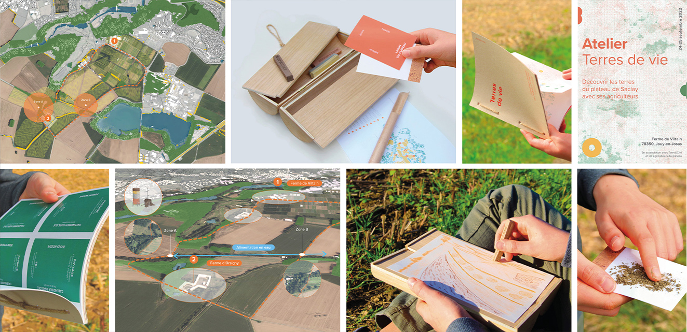
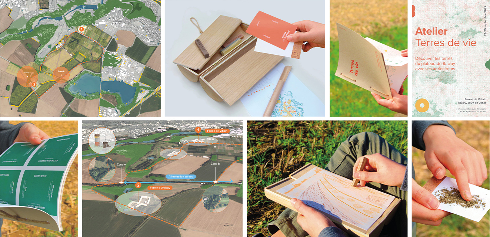

Terres de vie
Chemins pédestres
et ateliers
2022
Plateau de Saclay
Ces dernières années une volonté de changement des pratiques agricoles s’observe.
À travers les mutations au sein de nos territoires, le projet questionne le renouvellement
de notre rapport entre ville, nature et agriculture. Il tend à accompagner la filière agricole
dans l’objectif de renouer le territoire local et son environnement.
Pensé à différentes échelles, le projet met en lien exploitations agricoles et population
à travers les enjeux du plateau de Saclay. Il permet une médiation et une sensibilisation sur
le territoire local par des champs d’actions de temporalités variées et un atelier : bornes
de terres crues, dispositif d’exploration, nouveau modèle d’almanach paysan. Ces derniers mettent
en éveil nos sens, facilitent les échanges et accompagnent la lecture du paysage pour permettre
à la population de devenir acteur de leur territoire.
 
